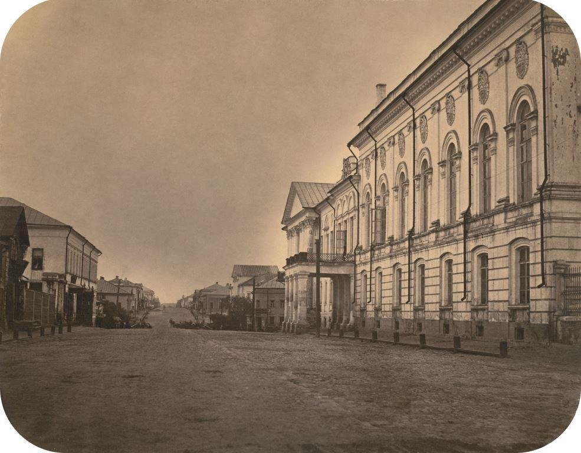

3. 在20世纪的梁赞
3.1. 形成梁赞州
1929年，梁赞州的存在停止。取而代之的是梁赞区，被纳入莫斯科州。 1937年，梁赞州成立。
3.2. 人口
截至1925年，梁赞市人口为33.4万人，包括周边地区，总共约有50万人。到了1930年，居民人数已经增长到72万人。根据1959年的人口普查数据，梁赞市有21万人居住，到1970年增加到34.8万人，到1979年已经超过45万人。这样快速增长的原因是由于城市的繁荣工业发展和乡村人口的迁移，尤其是年轻人迁往城市。到1990年代末，城市的居民人口已超过53万人。
3.3. 城市经济
在1930年至1940年期间，该市有五个大型企业：梁赞农机厂，第168工厂（现为国家仪表厂），梁赞试验修理厂，皮革厂和十月胜利制鞋厂。
1949年至1950年期间，梁赞市的重工业得到了积极发展。建设了机床厂、炼油厂。1959年开设了人造纤维工厂。为了为所有企业提供电力和热能，新梁赞热电厂投入运营。在1950年期间，苏联最大的重锻压设备厂（ТКПО）、计数分析机（САМ）、热器材厂（Теплоприбор）、铸造设备厂、电子真空设备厂和无线电厂、锡渣再利用厂等大型工厂相继开业。1963年，中心铸造厂开始建设。轻工业也在发展，开设了家具厂、茶叶厂、糕点厂和面食厂。
随着重工业企业的建设，梁赞市形成了新的大型住区，如普里奥克斯基工人居住小区、索科洛夫卡、渣滓、城市森林公园等。
到了1970年，梁赞市已经发展成为重要的科技工业中心。市内有大约100家大型工业企业、设计局和科研机构。梁赞在军工产业中具有重要意义。

一直以来，梁赞是一个强大的铁路枢纽，梁赞-1和梁赞-2两个火车站为南部和东部方向提供货运和客运服务。
在1960年至1980年期间，城市基础设施和社会生活领域快速发展。修建新的桥梁和道路，学校和幼儿园，医院和诊所，体育场和文化宫。通过吸纳周边村庄的土地，新的大型居住区 - 莫斯科区、达什科沃-佩索奇、卡尼舍沃、涅多斯托耶沃的出现，城市面积快速增加。
3.4. 教育
在1920年代，建立了统一的学校系统，提供起初教育和七年制教育。在这个时期，梁赞有12所不同类型的学校和九所技术学院，还有农业学院和师范学院。那个时期的主要任务是消除文盲。到1923年，梁赞市及郊区有29,000人识字。
到了1950年代末，梁赞市的所有教育机构共有超过36,000名学生。创建了农业学院、以学者伊.帕夫洛夫命名的医学院、无线电技术学院以及全联盟远程技术学院分院。
到1985年，梁赞拥有70所中学、15所技术学院和中等专业学校以及40所职业技术学校。高等教育机会可在四所文科学院及两所莫斯科大学分校以及三所高等军事学院和内务部高等学院获得。在1960年至1970年期间，幼儿教育机构体系最终形成。
3.5. 建筑
1929年，梁赞建立了第一座多层住宅楼。到1948年，梁赞大约有5000座住宅建筑，其中只有两座5层楼房，19座4层楼房，其余都是1层或2层楼房。其中有436座石头房屋，大约300座是石木结构（第一层是石头，第二层是木头）。其余的住宅建筑仍然是木制的。
在第二次世界大战后的几十年里，在工业快速发展的同时，梁赞市建造了少先队宫殿、谢苏宁剧院（现为地区爱乐音乐厅），梁赞商业大厦、苏维埃人民经济合作和城市电话局的建筑。1961年，地方剧院建成。


在1960年至1970年期间，梁赞新建了中央邮局大楼、以高尔基命名的地区图书馆、几家电影院、马戏团和家庭之家。

除了文化建筑之外，许多住宅也正在建设中，历史悠久的部分以及新的区域正在进行大规模住宅建设，主要是多层住宅、五层和九层的建筑。
3.6. 文化
1923年，州立博物馆设立在梁赞克里姆林宫，1968年改建为梁赞历史建筑博物馆和保护区，并占据整个克里姆林宫的领土。1946年，纪念馆在伊. 帕夫洛夫学者之家开放，1980年，在自由街的Ryumin宫开始了工作的州艺术博物馆。此外，青年运动历史博物馆和空降兵历史博物馆也开始运作。
城市里有几十个图书馆，三个剧院 - 州剧院，青年观众剧院和儿童剧院，以及许多电影院，文化宫，体育场和游泳池。
20世纪下半叶，城市增加了许多纪念碑：学者伊. 帕夫洛夫，F. A. Poltaev，S. A. Yesenin，G. K. Petrov，胜利纪念复合体，苏波战争年代的苏波友谊和其他纪念碑。